Симплекс-метод

Пусть
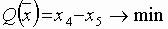
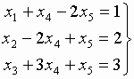
Выберем в качестве базисных следующие переменные {x1, x2, x3} и разрешим систему относительно этих переменных. Система ограничений примет следующий вид:
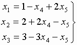.
Переменные {x4, x5}являются небазисными. Если взять x4 = 0 и x5 = 0, то получим угловую точку (опорный план): 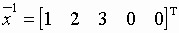, которому соответствует 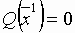.
Значение целевой функции можно уменьшить за счет увеличения x5. При увеличении x5 величина x1 также увеличивается, а x2 и x3 – уменьшаются. Причем величина x2 раньше может стать отрицательной. Поэтому, вводя в базис переменную x5, одновременно x2 исключаем из базиса. В результате после очевидных преобразований получим следующие выражения для новой системы базисных переменных и целевой функции:
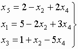
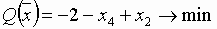.
Соответствующий опорный план: 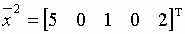 и 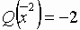.
Целевую функцию можно уменьшить за счет увеличения x4. Увеличение x4 приводит к уменьшению только x3. Поэтому вводим в базис переменную x4, а x3 исключаем из базиса. В результате получим следующие выражения для новой системы базисных переменных и целевой функции:
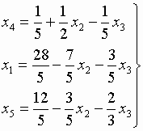
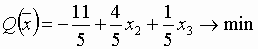.
Соответствующий опорный план: 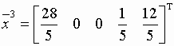 и значение целевой функции: 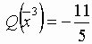. Так как все коэффициенты при небазисных переменных в целевой функции неотрицательны, то нельзя уменьшить целевую функцию за счет увеличения x2 или x3, следовательно, полученный план 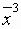 является оптимальным.
Пример 2
Пусть имеем задачу
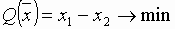
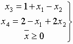.
Переменные {x3, x4}- базисные, а {x1, x2}- небазисные переменные. Опорный план 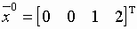, 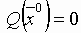.
Теперь вводим в базис переменную x1, a x4 исключаем из базиса. В результате получим следующие выражения для базисных переменных и целевой функции:
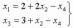
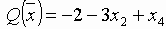.
Опорный план: 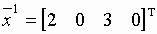, значение целевой функции: 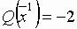.
Теперь можно заметить, что при увеличении x2 значения переменных x1 и x3 также возрастают, то есть при 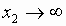 в допустимой области 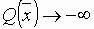 (задача не имеет решения).
Замечание
В процессе поиска допустимого плана может быть выявлена противоречивость системы ограничений.
Вагенгейм Александр, ИСС-11